∞ ZETIN · ZEro To INfinite
완성품 검수 사전자료
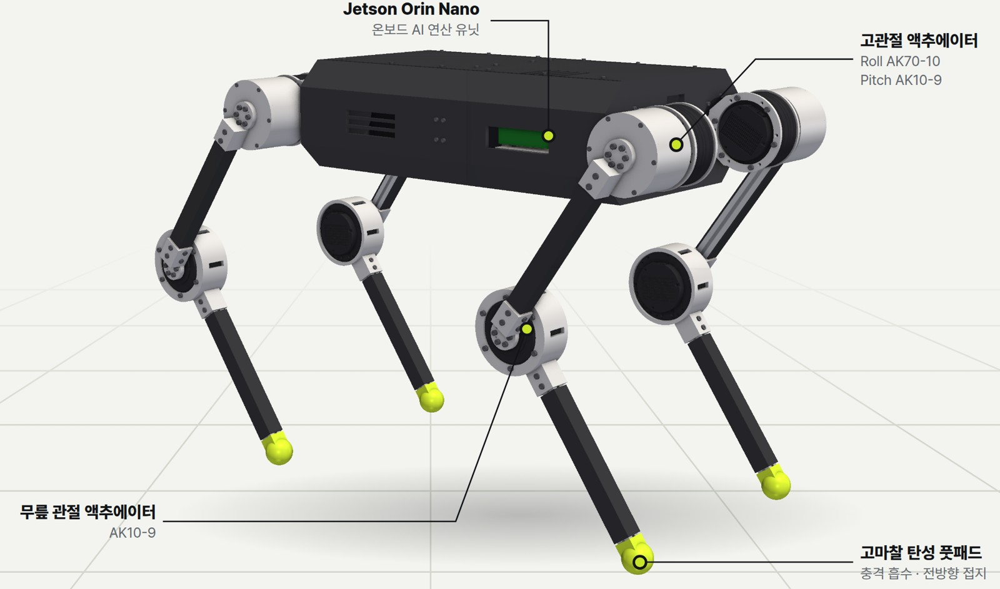
— AI QUADRUPED ROBOT
ZETIN High-performance Optimized Unified Navigating Dog
강화학습으로 걷는
12자유도 4족보행 로봇 안내견
12 DoF
23 kg
AK 모터 × 12
Jetson Orin Nano
Isaac Sim · ROS2
01 · 소개
“ 로봇연구회에서 출발한 팀의 4족보행 로봇 개발 ”
서울시립대 중앙 로봇연구회 ZETIN(1993년 창설)에서 출발, 2026년 6월 설립.
캠퍼스타운 SI-STATION#1 입주 기업.
RoboCup Korea Open 2026 휴머노이드 성인부 우승.
설계·보행 AI 학습·로봇 SW까지 외주 없이 자체 개발.
| 항목 | 사양 |
|---|---|
| 구조 | 4족 · 12자유도 (다리당 3관절) |
| 구동기 | AK70-10 × 4, AK10-9 × 8 |
| 연산 | Jetson Orin Nano Super |
| 모터 제어 | STM32G474 → CAN |
| 센서 | 깊이 카메라, IMU, 관절 엔코더 |
| 전원 | 6S 16,000 mAh × 2 직렬 (12S) |
| 몸체 | 306 × 520 × 150 mm, 3D 프린팅 |
| 질량 | 약 23 kg (CAD 기준) |
2
3
02 · 소개
“ 시각장애인 이동 보조의 공백과 이번 사업의 범위 ”
문제
접근
깊이 카메라로 전방 지형 인식, 계단·턱 통과. 방향·정지·경고는 손잡이로 전달.
이번 사업의 범위
안내견 양성에 수년 소요, 대기자가 공급을 넘어섬. 흰지팡이로는 단차·머리 높이 장애물 사전 파악 불가.
03 · CAD
“ Fusion 360 기반, 관절 12개·체결 부품 단위까지 설계 ”
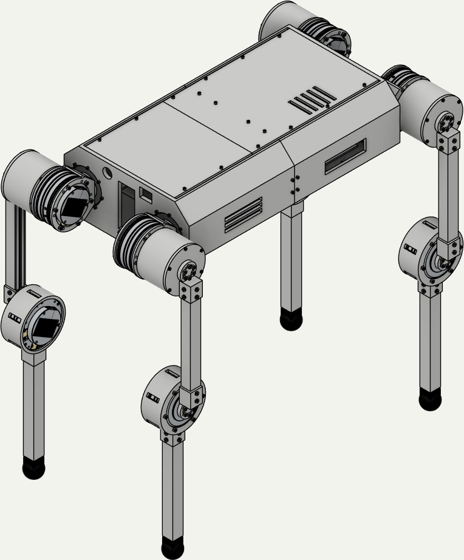
등각
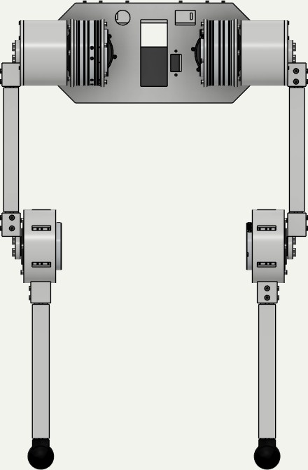
정면
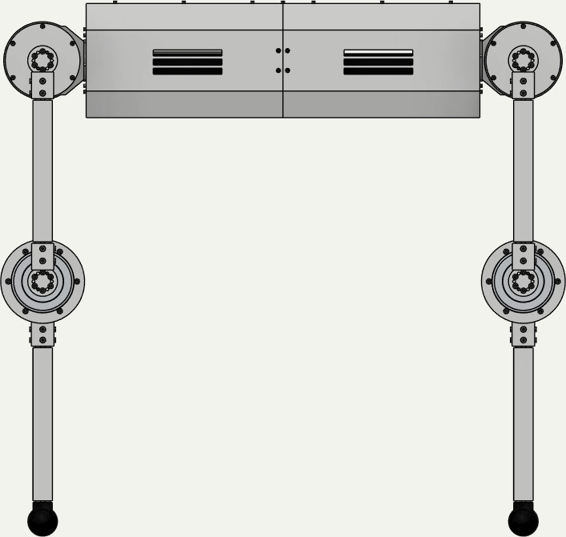
측면
롤 AK70-10 × 4, 피치·무릎 AK10-9 × 8
볼트 488개 구멍 일치, 부품 간섭 0건
306 × 520 × 150 mm, 7조각 + 배터리·Jetson 자리
Isaac Sim USD(링크 13·관절 12)로 변환
4
04 · CAD
“ 모터 제조사 2D 도면과 하나씩 대조 ”
| 부위 | 문제 | 조치 |
|---|---|---|
| 허벅지 클램프 (com_pro) | 볼트 구멍이 30° 어긋나 체결 불가 | 볼트 패턴 30° 회전 |
| 롤 모터 출력부 (combine_1) | 볼트 머리가 모터 하우징에 닿음 | Ø6 × 3.5 카운터보어로 매립 |
| combine_1 보스 | 볼트 구멍 옆 벽 두께 1 mm | 보스 Ø50으로 확대 |
| 엉덩이 피치 모터 고정 | 볼트 6개 중 3개만 사용 | 링 구조로 앞뒤 6개씩 양단 체결 |
| 프로파일 소켓 | 15 mm만 삽입, 고정 볼트 없음 | 30 mm 삽입 + 교차 볼트 4개 |
| 출력 부품 전체 | FDM 공차 미반영 | M3 Ø3.4, M4 Ø4.5 등 공차 반영 |
⇒ 출력 전에 도면에서 안 맞는 곳을 먼저 잡아 재출력 횟수를 줄임.
5
05 · CAD
“ 전장품을 다 넣고도 다리와 부딪히지 않게 ”
몸체 - 폭 400 → 306 mm로 줄여 웅크릴 때 정강이 간섭 제거. 7조각으로 나눠 출력, 상판은 탈착식.
전원 - 6S 배터리 2개 직렬(12S, 44.4 V). 비상정지·메인 스위치·충전 포트는 뒷판에 배치.
통신 - USB-CAN 2개로 앞·뒤 다리 버스 분리, 다리 안에서는 모터끼리 데이지체인.
가동 범위 - 롤 ±45°, 피치 ±120°, 무릎 ±140° (모델 기준).
모터 12개
9.60
배터리 2개
4.07
몸체 출력물
3.62
다리 출력물
2.38
Jetson 목업
1.30
프로파일
0.79
볼트·체결
0.78
커버·발
0.53
단위 kg. Jetson 목업은 실제보다 무겁게 잡힌 값.
⇒ 무게의 약 42%가 모터. 무릎 모터 토크 여유가 다음 과제.
6
06 · 시뮬레이션
“ 깊이 영상 → 지형 인식 → 보행 모델 → 모터, 50 Hz 루프 ”
84 × 84 깊이 영상
지형 높이 187점 복원
강화학습 · IMU·관절 상태 입력
CAN으로 모터 명령
AK70-10 · AK10-9
연산
Jetson Orin Nano Super, ROS2 기반 추론. 1회 추론 2.33 ms(CPU)로 50 Hz 제어 충족.
안전장치
입력 100 ms 이상 끊김·이상 시 기본 자세 복귀. 소프트웨어 비상정지 포함.
디지털 트윈
Fusion CAD → Isaac Sim USD 변환. 링크·관절·질량을 실기체 기준으로 반영.
7
07 · 시뮬레이션
“ 버전마다 문제 하나씩 개선, V8 → V14 ”
| 버전 | 개선한 문제 | 결과 |
|---|---|---|
| V8 | 대각 보행(트롯) | 속도 명령 추종 확보 |
| V9 | 험지·계단 환경 추가 | 학습 환경 범위 확장 |
| V10 | 좌표계 오류 | 옆으로 걷던 원인 규명·수정 |
| V11 | 정답 지형을 보는 Teacher 모델 | V12의 기준 모델 |
| V12 | 깊이 영상만으로 지형 파악 | 폐루프 9개 중 7개 통과, 계단 하강 3/3 |
| V13 | 모터 토크 제한(구동부 보호) | 모터 한계 초과 요청 9.63% → 2.25% |
| V14 | 다리끼리 부딪힘 보정 | 128개 병렬 환경 확대 훈련 완료 |
⇒ 한 번에 하나씩 고치며 V14까지 개선. 전 버전 기록은 GitHub·클라우드에 보관.
8
08 · 시뮬레이션
“ 깊이 카메라 입력만으로 9개 시나리오 중 7개 통과 (V12) ”
7/9
전체 시나리오 통과
(V12, 계단·험지 포함)
3/3
계단 하강 통과
(상승은 1/3)
0.035
지형 복원 오차(MAE)
검증 데이터 8,192개
2.33 ms
1회 추론 시간(CPU)
50 Hz 제어 충족
V13 모터 토크 제한 효과 (평지, 전진 0.4 m/s 명령)
요청 토크 P99 96.78 → 56.19 N·m · 평균 관절 전력 22.54 → 11.60 W · 전진 속도 0.72 → 0.68 m/s
9
09 · 시뮬레이션
“ 최신 모델(V14·V15) 기준, Isaac Sim ”
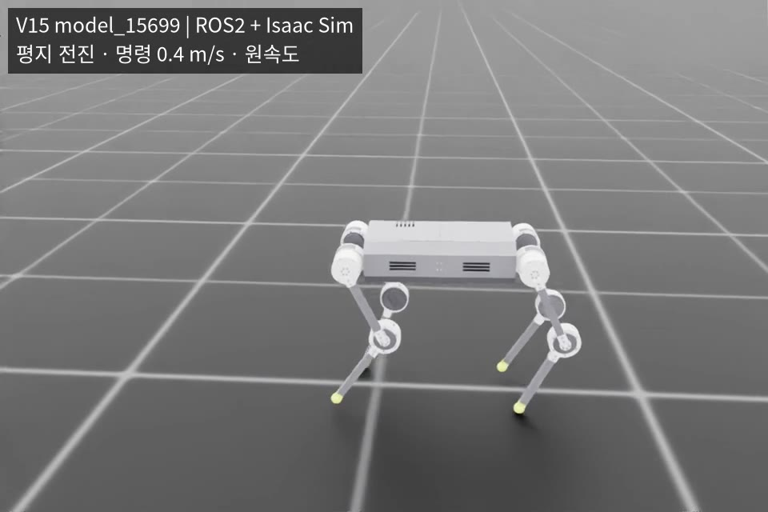
- ROS2 + Isaac Sim 연동
- 전진 명령 0.4 m/s
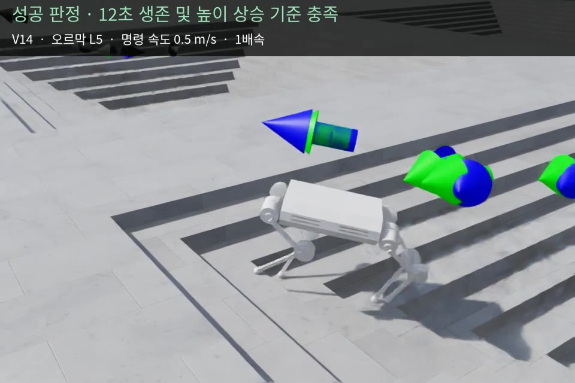
- 오르막 L5, 명령 0.5 m/s
- 12초 생존·높이 상승 기준 충족
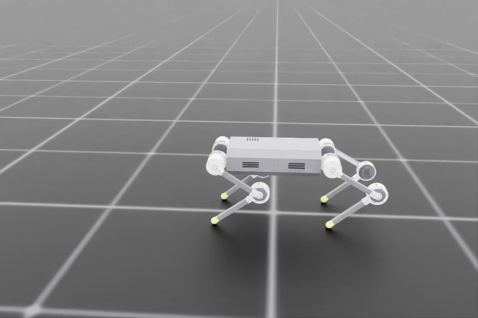
- 몸을 낮췄다 다시 일어서기
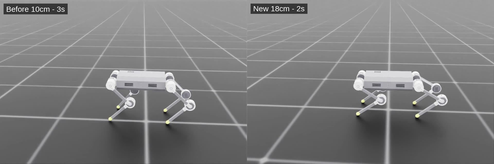
- 기존 10 cm / 3초
- 신규 18 cm / 2초
⇒ 계단·평지·자세 전환까지 현재 모델로 시뮬레이션 확인 완료.
10
10 · PCB
“ 다리당 보드 1개, 모터 3개에 전원·CAN 분배 ”
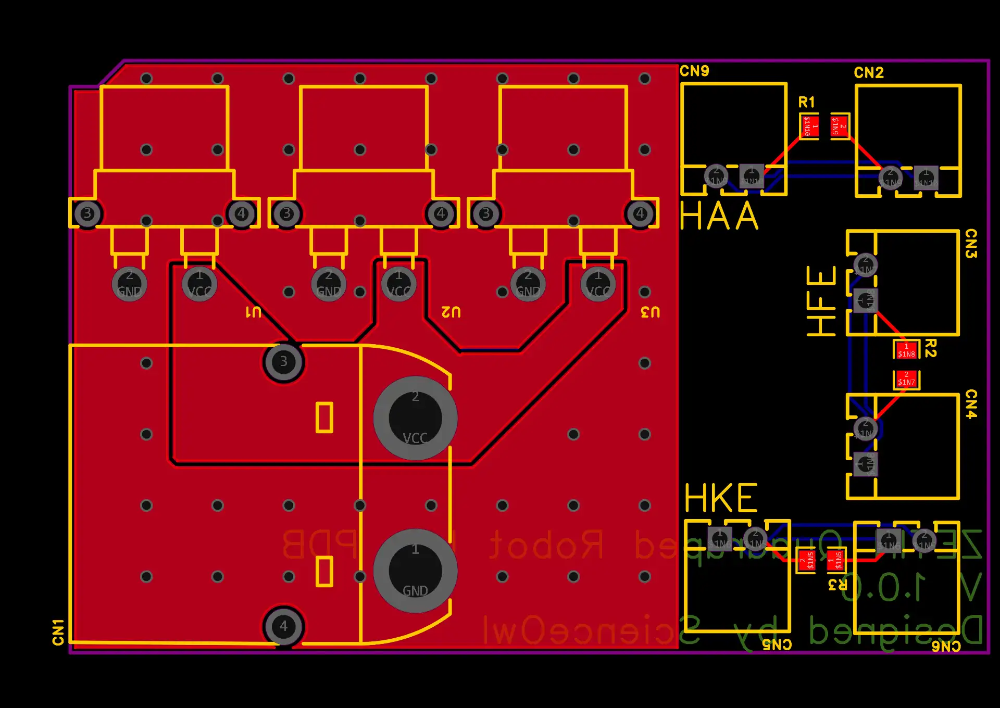
XT90 입력 1개 → XT30 출력 3개로 엉덩이 롤·피치, 무릎 모터에 배터리 전원 분배.
관절(HAA·HFE·HKE)마다 2핀 커넥터 한 쌍으로 CAN 연결, 120 Ω 종단 저항 포함.
| 부품 | 위치 | 수량 |
|---|---|---|
| XT90PW-M | CN1 | 1 |
| XT30PW-F | U1–U3 | 3 |
| Molex 22057025 | CN2–CN6, CN9 | 6 |
| 120 Ω (0805) | R1–R3 | 3 |
11
11 · 실기체
“ 3D 프린팅 출력·1차 조립 완료, 무릎부 보강 진행 중 ”
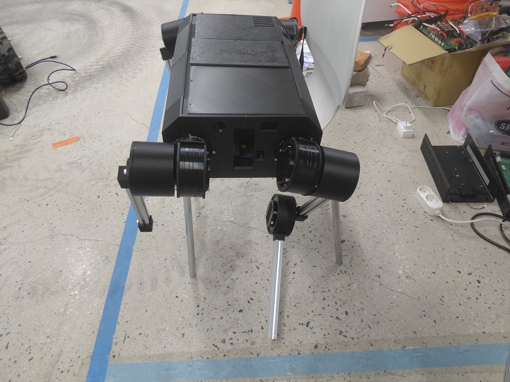
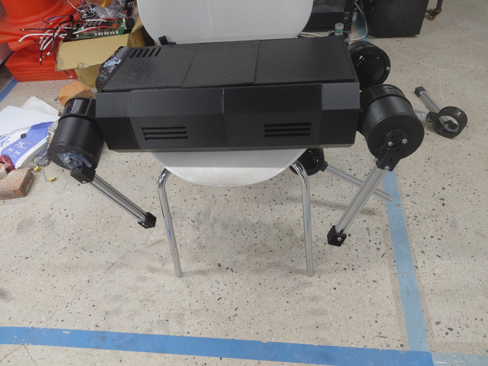
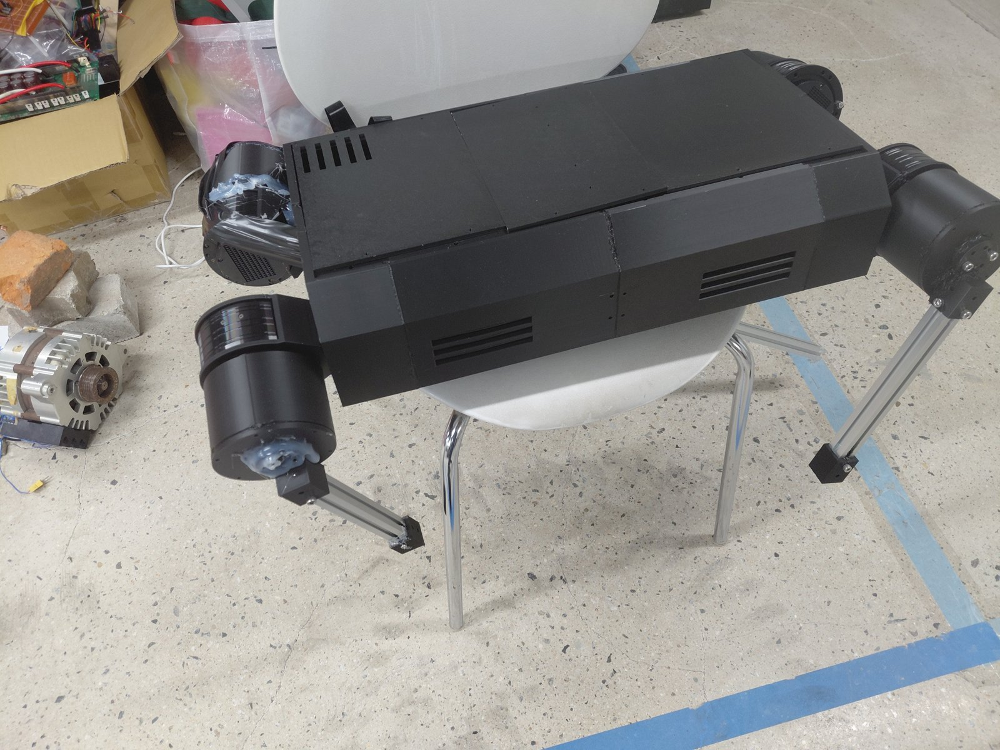
설계 Fusion 360 상세 설계, 볼트 488개 구멍 일치·부품 간섭 0건 확인
몸체 폭 400 → 306 mm로 줄여 웅크린 자세의 다리 간섭 제거
다음 보강한 무릎 부품 재조립 10/28경, 이후 모터 구동 확인
12
12 · 실기체
“ FEA 결과: 무릎 쪽 com_pro는 PLA 100% 채움에도 기준의 약 13배 변위 ”
결합부 하나 때문에 발끝이 밀리는 양(mm, 상위 1% / 상위 0.1%). 기준은 결합부당 1 mm, 굵은 칸 = 기준 초과
| 결합부 | 부품 | 지금 출력 설정 | PLA 100% 채움 | 같은 형상 알루미늄 |
|---|---|---|---|---|
| 몸체 → hip | combine_1 | 3.0 / 6.6 | 0.8 / 1.7 | 0.03 / 0.07 |
| hip → 허벅지 | fake_motor + fake_cover | 5.2 / 11.0 | 1.4 / 3.0 | 0.05 / 0.12 |
| hip → 허벅지 | com_pro (엉덩이 쪽) | 0.5 / 1.1 | 0.07 / 0.14 | ≈ 0 |
| 허벅지 → 정강이 | com_pro (무릎 쪽) | 29 / 52 | 7.5 / 13 | 0.29 / 0.51 |
| 허벅지 → 정강이 | knee 컵 | 1.8 / 3.2 | 0.21 / 0.38 | 0.01 / 0.01 |
계산: CAD 메시 0.75–1.25 mm 격자 FEA, 실제 접촉면(0.3 mm 이내)만 고정 · 하중 = 9개 시험에서 역산한 관절 반력, 4다리 대칭 · 물성 = Bambu PLA Basic 데이터시트(탄성계수 2.68 GPa, 층 방향 2.16 / 인장강도 39 MPa, 층 방향 35 / 열변형 54 °C) · 출력 설정 = 실제 출력 파일의 벽 2겹(약 0.9 mm), 인필 15% grid
13
13 · 손잡이
“ 잡는 힘으로 의도 전달, 모터 장력으로 방향 수신 ”
로봇 위치를 쉽게 찾아 잡는 구조. 깊이 카메라로 사용자 손 인식·거리 측정.
압력 센서로 잡는 힘을 읽어 출발·정지 의도 파악. 손을 놓으면 비상정지.
QDD 모터 장력으로 방향·속도 전달. IMU로 리드줄 기울기 감지.
대기 (저전력)
초기화 · IMU 기준값 보정
찾기 모드
손잡이 잡기 대기
안내 모드
IMU 1 kHz · PID 500 Hz
비상정지
모터 차단
움직임 감지
잡음
놓음
압력 사라짐
14
14 · 손잡이
“ 기울기 감지·압력 비상정지·손 인식 단위 시험 ”
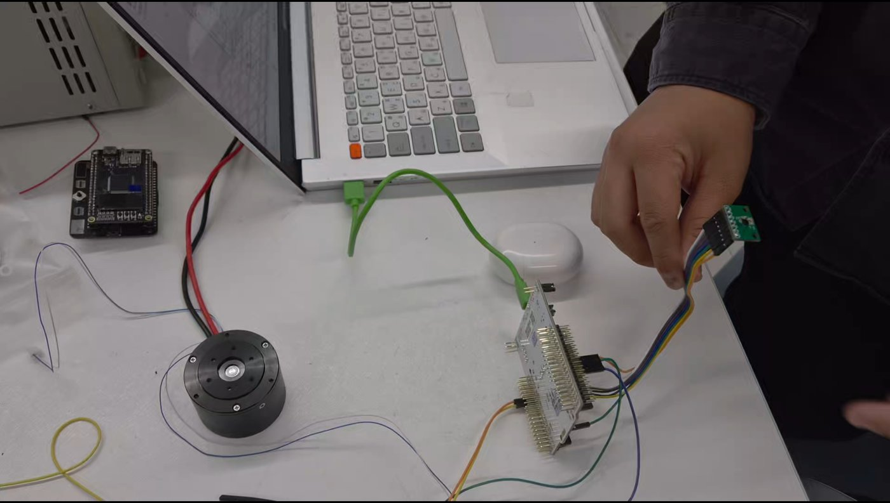
IMU로 리드줄이 기우는 방향을 읽어 모터에 반영
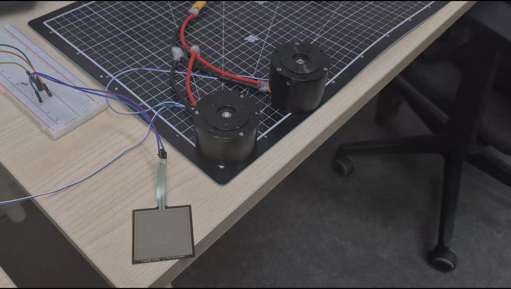
손을 떼 압력이 사라지면 모터를 멈춤
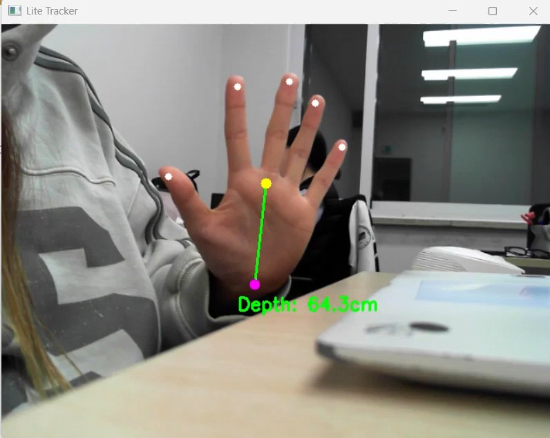
손잡이를 놓친 사용자의 손 위치와 거리를 측정
⇒ 다음은 진동 신호 보정과 로봇 본체 연동.
15
15 · 제작·구매
“ 외주 없이 설계부터 학습까지 7단계 직접 수행 ”
| 단계 | 한 일 | 도구·부품 | 상태 |
|---|---|---|---|
| 1. 설계 | 12관절 구조, 모터 체결부, 몸체 재설계 | Fusion 360 | 완료 |
| 2. 부품 구매 | 연산 보드·SSD·배터리·전선·커넥터 | 17쪽 표 참고 | 완료 |
| 3. 3D 프린팅 | 몸체·관절 브래킷·다리 커버 | Bambu H2D·X1C | 완료 |
| 4. 조립·배선 | 모터·프레임 조립, 12S 전원·CAN 배선, 다리 분배 보드(11쪽) | 2020 프로파일 | 1차 완료, 무릎 보강 중 |
| 5. 보행 AI | 강화학습 보행·깊이 인식 모델(V8~V14) | Isaac Sim/Lab | 완료 |
| 6. 로봇 SW | ROS2 런타임, 안전장치, A/B 테스트 | ROS2 | A/B 진행 중 |
| 7. 핸들 | 스마트 리드줄 시제작·시험 (14~15쪽) | IMU·압력 센서·QDD 모터 | 시제품 시험 완료 |
⇒ 과업지시서: 해당 없음. 외주 없이 7단계 모두 팀 내부에서 수행.
16
16 · 제작·구매
“ 연산 보드·전원부 중심, 총 1,360,000원 ”
| 결제일 | 구매처 | 품목 | 금액(원) |
|---|---|---|---|
| 10/12 | (주)엘레파츠 | XT30PW-F × 30, XT90PW-M × 10 (분배 보드·배선용) | 45,900 |
| 10/11 | 구팡 | Jetson Orin Nano Super 개발자 키트 | 657,000 |
| 10/11 | 나인웍스스토어 | 삼성 PM9C1 NVMe 256GB SSD | 90,900 |
| 10/11 | 넥스트코리아 | 12·16AWG 실리콘케이블 빨강·검정 각 20 m | 96,200 |
| 10/07 | 엑스캅터 | ECOFLUX 16,000 mAh 6S 배터리 × 2 | 470,000 |
| 합계 | 1,360,000 |
17
17 · 현황
“ 시뮬레이션·SW 완료, 실기체 검증 단계 ”
18